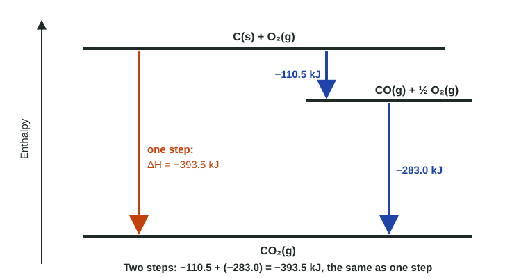

Hess's Law
Because enthalpy is a state function, the ΔH of a reaction is the same whatever route connects its reactants and products.
Part 1 · Hook
Why this matters
Part 2 · Before you start
What this builds on
Part 3 · Prerequisite check
Quick check before you start
1. If N₂ + 3 H₂ → 2 NH₃ has ΔH = −92.2 kJ/mol, what is ΔH for 4 NH₃ → 2 N₂ + 6 H₂?
- +184.4 kJ/mol
- −184.4 kJ/mol
- +92.2 kJ/mol
- −46.1 kJ/mol
Show the answer
Reversed (sign flips) and doubled (size doubles): +184.4 kJ/mol.
- Correct: +184.4 kJ/mol:
- −184.4 kJ/mol:
- +92.2 kJ/mol:
- −46.1 kJ/mol:
2. ΔH°f of O₂(g) is
- 0
- −495 kJ/mol
- +495 kJ/mol
- −285.8 kJ/mol
Show the answer
O₂(g) is an element in its standard state.
- Correct: 0:
- −495 kJ/mol:
- +495 kJ/mol:
- −285.8 kJ/mol:
Part 4 · See it
See it first

Part 5 · Step by step
How it works, step by step
- Enthalpy depends only on the state of a system, not its historyit is a state function
- Two routes connect the same reactants and productsthey have the same overall ΔH
- A target equation can be written as the sum of known equationsits ΔH is the sum of their ΔH values (Hess's law)
- A known equation must be reversed or scaled to fitits ΔH is reversed in sign or scaled by the same factor
- Substances that appear on both sides after addingcancel, leaving exactly the target equation
Part 6 · Key ideas
Key ideas
- Enthalpy is a state function: ΔH depends only on the start and end, not the route.
- Hess's law: if equations add up to the target, their ΔH values add up to the target's ΔH.
- Reverse an equation, change the sign of ΔH. Multiply an equation, multiply ΔH by the same factor. Do both when needed.
- Work substance by substance: put each target substance on the correct side in the correct amount, then check that everything else cancels.
- Formation (6.8) is Hess's law with a route through the elements.
Part 7 · Misconception
A common mistake
The wrong idea: When I reverse an equation and multiply it by 3, I reverse the sign of ΔH and I'm done.
What actually happens: Every change to the equation applies to ΔH. Reversed and tripled means ΔH × (−3).
Part 8 · Check yourself
Check yourself
Exam-style questions. Anything you miss goes into your review queue.
Data table
Three combustion reactions
A student wants ΔH° for C(graphite) + 2 H₂(g) → CH₄(g), which cannot be measured directly because carbon and hydrogen do not react cleanly to give only methane. She uses these measured reactions.
| Reaction | Equation | ΔH° (kJ/mol) |
|---|---|---|
| 1 | C(graphite) + O₂(g) → CO₂(g) | −393.5 |
| 2 | 2 H₂(g) + O₂(g) → 2 H₂O(l) | −571.6 |
| 3 | CH₄(g) + 2 O₂(g) → CO₂(g) + 2 H₂O(l) | −890.3 |
1. What must the student do with Reaction 3 to use it toward the target?
- Reverse it, so CH₄ appears as a product; ΔH becomes +890.3 kJ/mol.
- Reverse it, so CH₄ appears as a product; ΔH stays −890.3 kJ/mol.
- Keep it exactly as written, since CH₄ already appears in Reaction 3.
- Multiply it by 2, since the target has 2 H₂.
Show the answer
Match each target substance to the side it is on. CH₄ is a product in the target, so Reaction 3 is reversed: +890.3 kJ/mol.
- Correct: Reverse it, so CH₄ appears as a product; ΔH becomes +890.3 kJ/mol.: Right: the target has CH₄ on the product side, and reversing flips the sign.
- Reverse it, so CH₄ appears as a product; ΔH stays −890.3 kJ/mol.: Reversing a reaction always changes the sign of its ΔH; changing the equation but not its ΔH is a common slip.
- Keep it exactly as written, since CH₄ already appears in Reaction 3.: As written, CH₄ is a reactant; the target makes CH₄.
- Multiply it by 2, since the target has 2 H₂.: The target needs 1 mol of CH₄, the same as Reaction 3; it only needs reversing.
2. Use Hess's law to calculate ΔH° for C(graphite) + 2 H₂(g) → CH₄(g), in kJ/mol.
Type a number and its unit.
Show the answer
Reaction 1 as written (−393.5) + Reaction 2 as written (−571.6) + Reaction 3 reversed (+890.3). The 2 O₂, CO₂ and 2 H₂O cancel. ΔH° = −393.5 − 571.6 + 890.3 = −74.8 kJ/mol.
- Answer: -74.8 kJ/mol
3. Which substances cancel when the three adjusted reactions are added? Select all that apply.
- O₂(g)
- CO₂(g)
- H₂O(l)
- H₂(g)
- CH₄(g)
- C(graphite)
Show the answer
Everything that is not in the target must cancel: O₂, CO₂ and H₂O. What remains is C + 2 H₂ → CH₄.
- Correct: O₂(g): 1 O₂ + 1 O₂ on the left and 2 O₂ on the right (from reversed 3) cancel.
- Correct: CO₂(g): Made in Reaction 1 and used up in reversed Reaction 3.
- Correct: H₂O(l): 2 H₂O made in Reaction 2 and used in reversed Reaction 3.
- H₂(g): H₂ stays: it is a reactant in the target.
- CH₄(g): CH₄ stays: it is the product of the target.
- C(graphite): Carbon stays: it is a reactant in the target.
4. Why is the answer the same as the standard enthalpy of formation of CH₄(g)?
- Any answer found with Hess's law is the enthalpy of formation of the last product.
- CH₄ is an element, so its ΔH°f is the value of any reaction it is in.
- The three measured reactions are each formation reactions.
- The target makes 1 mol of CH₄ from its elements in their standard states.
Show the answer
C(graphite) + 2 H₂(g) → CH₄(g) is the formation reaction of methane, so its ΔH° is ΔH°f(CH₄) = −74.8 kJ/mol.
- Any answer found with Hess's law is the enthalpy of formation of the last product.: Hess's law gives ΔH for whatever target you choose.
- CH₄ is an element, so its ΔH°f is the value of any reaction it is in.: CH₄ is a compound of carbon and hydrogen.
- The three measured reactions are each formation reactions.: Reactions 2 and 3 are not: 2 makes 2 mol of water, and 3 starts from a compound.
- Correct: The target makes 1 mol of CH₄ from its elements in their standard states.: Right: that is exactly the definition of ΔH°f.
5. Given 4 Al(s) + 3 O₂(g) → 2 Al₂O₃(s), ΔH = −3351.4 kJ/mol, what is ΔH for 2 Al(s) + 3/2 O₂(g) → Al₂O₃(s)?
- −3351.4 kJ/mol
- −1675.7 kJ/mol
- +1675.7 kJ/mol
- −6702.8 kJ/mol
Show the answer
Multiply ΔH by the same factor as the equation: ½ × (−3351.4) = −1675.7 kJ/mol.
- −3351.4 kJ/mol: The equation was halved, so ΔH must be halved too.
- Correct: −1675.7 kJ/mol: Right: the target is the given equation × ½, so ΔH × ½.
- +1675.7 kJ/mol: Halving does not reverse the reaction, so the sign stays negative.
- −6702.8 kJ/mol: That doubles ΔH; the coefficients were halved.
6. Which quantity is a state function?
- The distance a hiker walks to the top of a hill
- The enthalpy of a system
- The total energy a stove burns while cooking a meal
- The number of steps in a reaction mechanism
Show the answer
A state function depends only on the state, like the altitude of a place. Enthalpy is one, so ΔH depends only on the start and end states.
- The distance a hiker walks to the top of a hill: Distance walked depends on the trail chosen, so it is a path quantity.
- Correct: The enthalpy of a system: Right: H depends only on the current state (substances, amounts, temperature, pressure), not on how the system got there.
- The total energy a stove burns while cooking a meal: That depends on how the meal is cooked, not only on the start and finish.
- The number of steps in a reaction mechanism: Different mechanisms can connect the same reactants and products.
7. Put the steps for solving a Hess's law problem in order.
- Write the target equation and note the side and amount of each substance.
- Reverse or multiply each given equation to match the target, and change its ΔH the same way.
- Add the adjusted equations and check that everything not in the target cancels.
- Once only the target is left, add the adjusted ΔH values to get its ΔH.
Show the answer
Target first; then adjust each given equation (reverse, multiply or both, in either order) with its ΔH; then add the equations and check that only the target is left; then add the ΔH values.
- Correct order: 1. Write the target equation and note the side and amount of each substance. 2. Reverse or multiply each given equation to match the target, and change its ΔH the same way. 3. Add the adjusted equations and check that everything not in the target cancels. 4. Once only the target is left, add the adjusted ΔH values to get its ΔH.
Part 9 · Summary
Summary
Part 10 · Up next
What comes next
Part 11 · Connections